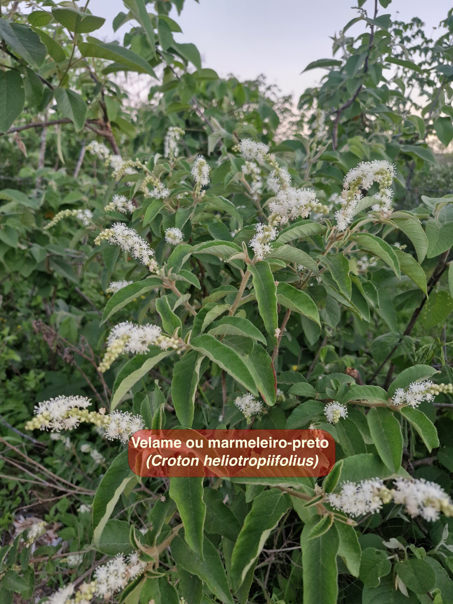
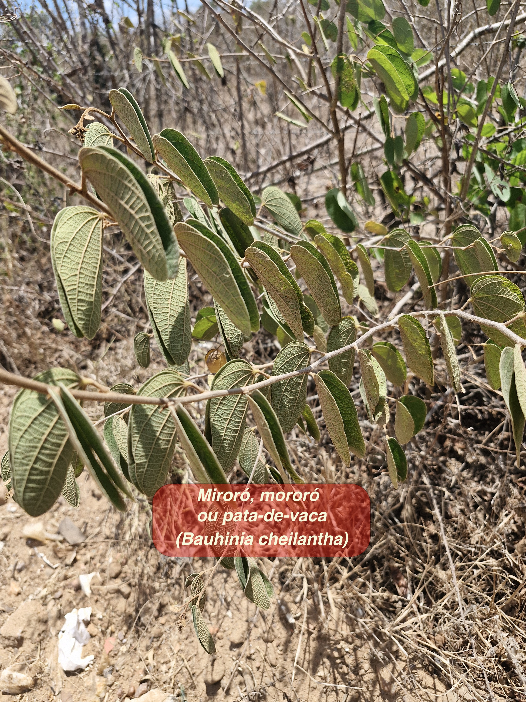
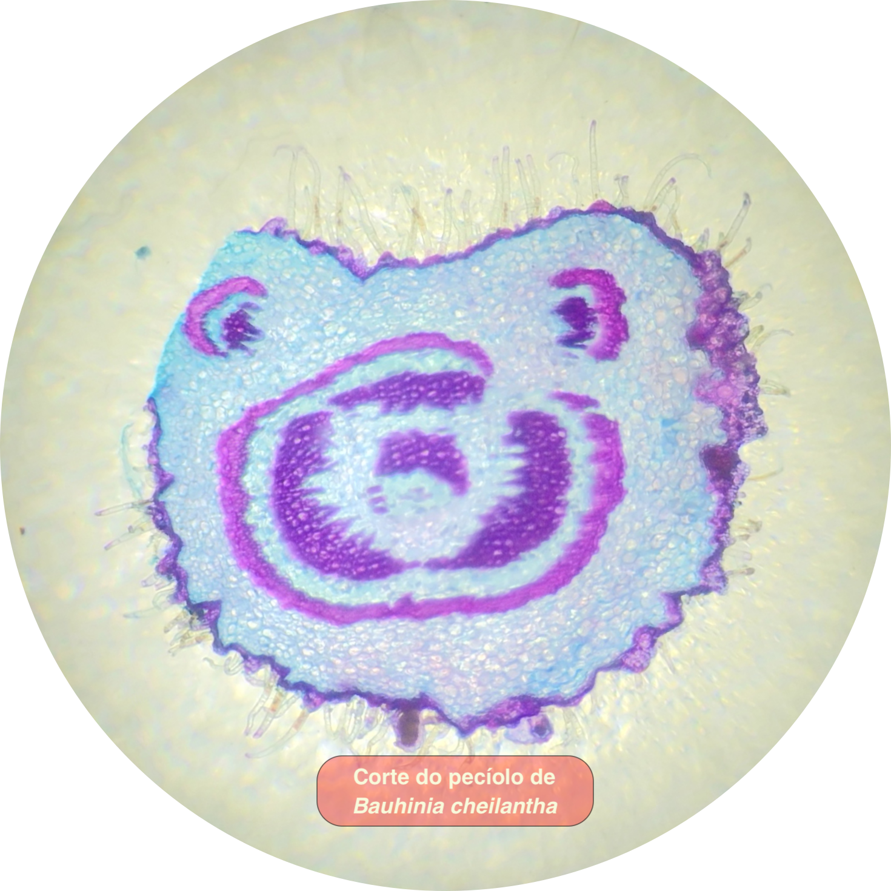

Nosso trabalho busca resgatar e valorizar o conhecimento tradicional sobre a flora, unindo o saber popular das comunidades locais ao conhecimento científico. Investigamos as espécies nativas da Caatinga, atuando desde a identificação botânica e incentivo ao cultivo sustentável, até o controle de qualidade pós-colheita e processamento fitoquímico para extração de princípios ativos. O objetivo é promover o uso seguro de fitoterápicos, documentar tradições ameaçadas e fortalecer a autonomia das comunidades.

A impercepção botânica é a dificuldade que o ser humano moderno tem de notar a presença e a importância vital das plantas no cotidiano. Para combater esse distanciamento, desenvolvemos estratégias educativas e de divulgação científica, como a elaboração de catálogos digitais e a construção de coleções botânicas didáticas (incluindo exsicatas e lâminas histológicas microscópicas). Buscamos reconectar a sociedade à biodiversidade, revelando a beleza e o valor socioambiental dos vegetais da nossa região.
Este projeto é uma pesquisa-ação extensionista do IFS - Câmpus
Glória desenvolvida junto à comunidade do Mocambo, em Porto da
Folha (SE). Diante da degradação da Caatinga, a iniciativa une
os saberes científico e popular para resgatar o conhecimento
tradicional sobre a flora medicinal. Por meio de oficinas
práticas e da elaboração de um catálogo digital participativo,
a ação busca combater a impercepção botânica, fortalecer a
autonomia local no preparo de fitoterápicos e promover a
conservação biocultural e ambiental no semiárido.
Aprovado
no Edital...
O projeto tem como foco iniciar a implantação de uma coleção
botânica no Instituto Federal de Sergipe (IFS). A iniciativa
abrange a coleta de espécimes em áreas urbanas e no bioma
Caatinga para a confecção de exsicatas, preservação de
material biológico em soluções e preparação de lâminas
histológicas. Além de fornecer um acervo físico e prático para
apoiar o ensino e estruturar a base para futuras pesquisas, o
projeto atua no combate à "cegueira botânica" por meio da
criação de um banco de imagens digital e da produção de
conteúdo de divulgação científica para a internet, promovendo
ativamente a valorização e a conservação da biodiversidade
regional.
Aprovado no Edital...
Tem alguma dúvida ou deseja colaborar com o grupo? Envie uma mensagem!
Rod. Eng. Jorge Prado Leite, s/n - Nossa Sra. da Glória, SE, 49680-000